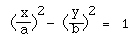
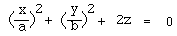

Quadrics
Written by Paul Bourke
July 1996
The following are the formulae for some of the more common quadrics,
that is, surfaces formed by an equation in x and y of at most degree 2.
Ellipsoid, real (Special case: Sphere)
Ellipsoid, imaginary
Cone, real
Cone, imaginary
Cylinder, real (Elliptic)
Cylinder, imaginary (Elliptic)
Cylinder (Hyperbolic)

Cylinder (Parabolic)
Paraboloid (Elliptic)

Paraboloid (Hyperbolic)
Hyperboloid (Single sheet)
Hyperboloid (Double sheet)
|